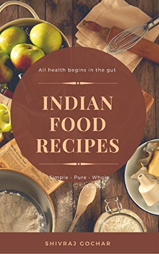

Tomato Shorba - A traditional soup to be had in sickness and in health
Mushroom Pepper Fry - a South India starter which will tingle your taste buds
Palak Rice - South Indian Main course with the goodness of Spinach